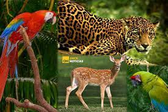

Pagina principal
Plantas en Honduras
Parque nacional la tigra
Biosfera del rio platano
Animales en Honduras
Honduras es un país que, a pesar de su pequeño tamaño, cuenta con una amplia diversidad de especies animales, por lo que se han implementado rigurosos controles y leyes con la finalidad de preservar la vida animal y la naturaleza.
Sin embargo, existen muchas especies amenazadas por diferentes causas, como la deforestación y la caza furtiva.
En Honduras existen 26 especies de animales en peligro de extinción, y una especie de flora o vegetal. Es por ello que centraremos este artículo en recopilar los animales que se encuentran amenazados en territorio hondureño.
El dato ofrecido aquí arriba es aportado por la Convención sobre el Comercio Internacional de Especies Amenazadas de Fauna y Flora Silvestre o CITES, el organismo encargado de regular el comercio internacional entre especies animales silvestres. Procedamos a ver la lista completa de los animales que se encuentran amenazados de extinción en Honduras, con imágenes y descripciones
